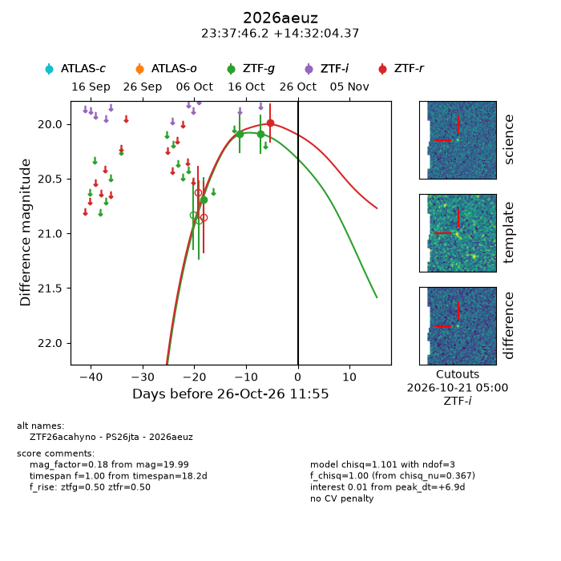
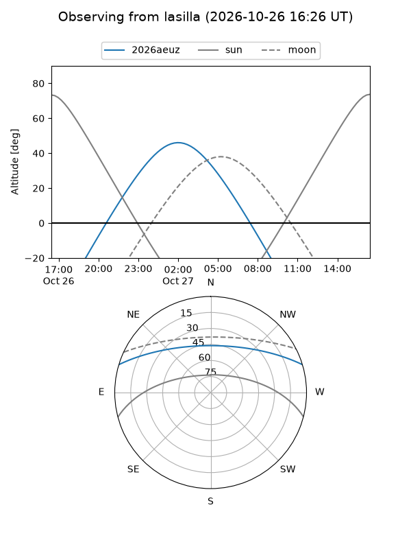
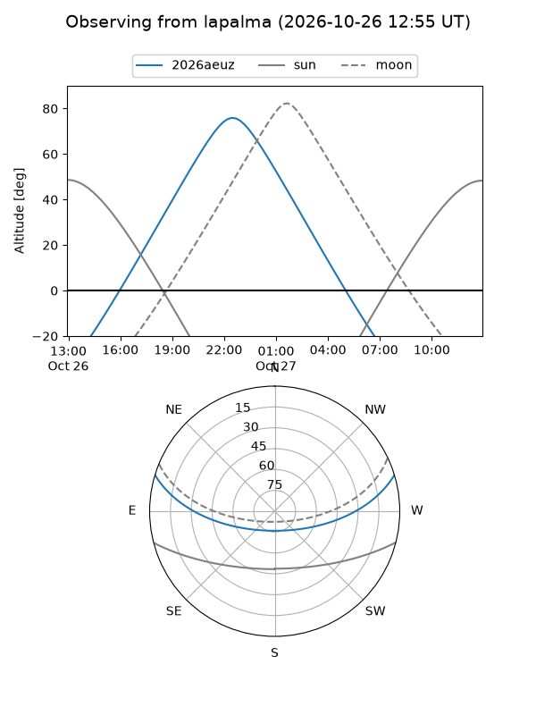
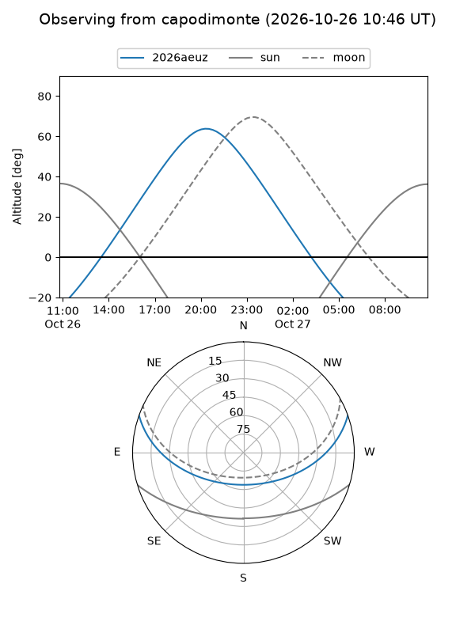
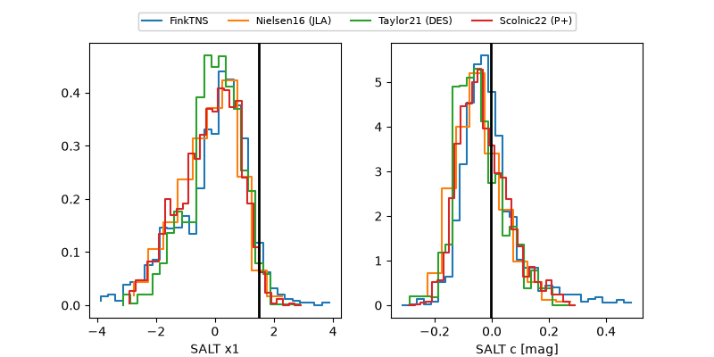

2026aeuz
Target 2026aeuz at 2026-10-26 23:36
Aliases and brokers:
FINK-ZTF: ztf.fink-portal.org/ZTF26acahyno
Lasair-ZTF: lasair-ztf.lsst.ac.uk/objects/ZTF26acahyno
ALeRCE-ZTF: alerce.online/object/ZTF26acahyno
YSE-PZ: ziggy.ucolick.org/yse/transient_detail/2026aeuz
TNS name: wis-tns.org/object/2026aeuz
Direct TNS query: direct search
alt names
ZTF26acahyno (ztf,fink_ztf)
2026aeuz (tns,yse)
PS26jta (panstarrs)
Coordinates:
equatorial (ra, dec) = 354.4425,+14.53455
equatorial (HMS+DMS) = 23:37:46.20,+14:32:04.37
galactic (l, b) = (97.4657,-44.66382)
Flags:
peak dt: +7.4
Photometry:
last ztfg=20.09, ztfr=19.99
3 ztfg, 1 ztfr detections
Lightcurve

Visibility



Additional plots
